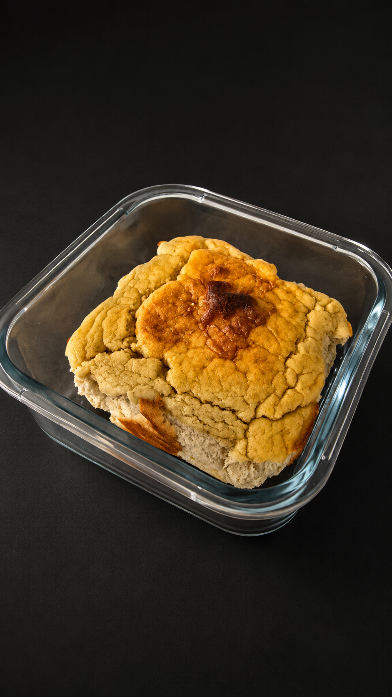

Mini gâteau pomme protéiné

Version normale
Ingrédients
- 30g de whey
- 2 oeufs
- 1 pomme
Préparation
- Mixer le tout jusqu'à obtenir une pâte homogène.
- Verser la préparation dans un moule.
- Mettre au four à 180°C pendant 30 minutes.
Valeurs nutritionnelles (approx.)
Par portion : 343 kcal • 38 g protéines • 13 g lipides • 18 g glucides • 3 g fibres
Version sèche
Ingrédients
- 30g de whey
- 2 blancs d'oeufs
- 1 pomme
Préparation
- Mixer le tout jusqu'à obtenir une pâte homogène.
- Verser la préparation dans un moule.
- Mettre au four à 180°C pendant 30 minutes.
Valeurs nutritionnelles (approx.)
Par portion : 220 kcal • 31 g protéines • 2 g lipides • 18 g glucides • 3 g fibres